O que é o Tudo ou Nada?
Conceito
O projeto Tudo ou Nada nasceu de uma convicção simples: a vida só ganha sentido quando a entregamos por inteiro. “Tudo ou nada” foi a resposta que a Sister Clare Crockett deu à sua própria vida. É essa mesma pressa de viver com verdade que levamos para cada missão e a cada pessoa que encontramos.
Para Quem
Pensado para jovens do 10.º ao 12.º ano (ensino secundário)
Ao Longo do Ano
Ao longo do ano contamos com:
- Encontro anual;
- Missões em vários locais do País que nos permitem viver um encontro com Jesus no dia-a-dia;
- Uma Peregrinação, onde partilhamos um caminho de oração e entrega;
- E outras propostas garantindo que o Tudo ou Nada é vivido no dia-a-dia e sem meias medidas.
Algo grande está a ser preparado...
Estamos a fechar as datas, locais e detalhes das próximas missões deste ano letivo. Fica atento — no dia 2 de Novembro revelamos tudo e abrimos as inscrições oficiais!
Não queres esquecer a data?
Guarda já no teu calendário pessoal ou segue as nossas redes sociais para não perderes o lançamento.
Onde vamos estar este ano?
Procura a tua escola e prepara-te para viver uma missão inesquecível!
Escola Secundária Rainha Dona Amélia
Escola Secundária Quinta do Marquês
Escola Secundária São João do Estoril
Escola Secundária do Pedro Nunes
Escola Secundária do Restelo
Liceu Francês Charles Lepierre
Escola Secundária Garcia de Orta
Colégio de Santa Doroteia
Colégio do Sagrado Coração de Maria
Escola Secundária de Cascais
Colégio Amor de Deus
Escola Secundária Filipa de Lencastre
Escola Secundária Sá da Bandeira
A Vida em Missão
Alguns dos momentos, alegrias e comunidade vividos no Tudo ou Nada. Clica para ampliar!
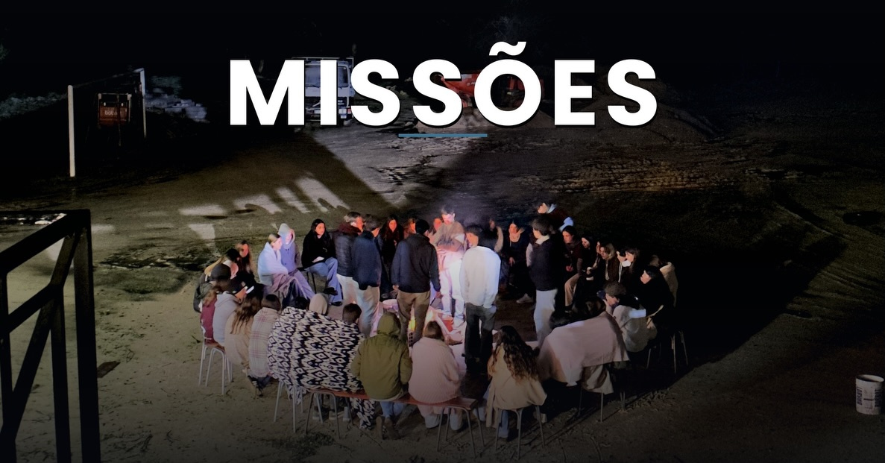
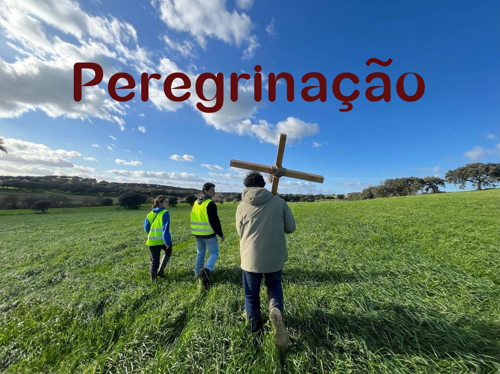
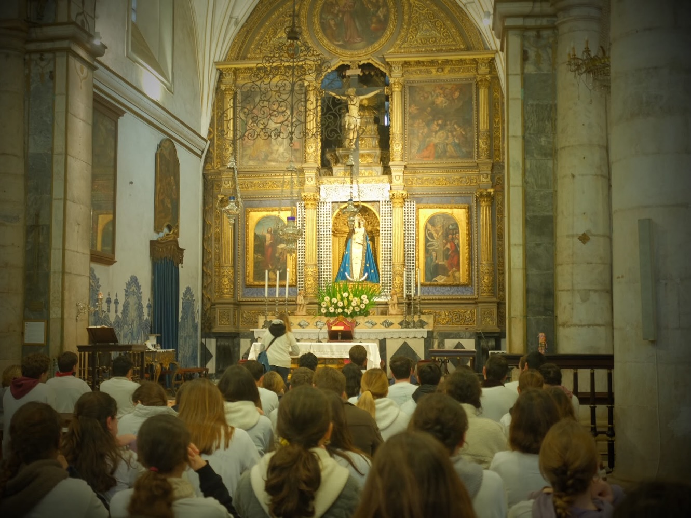
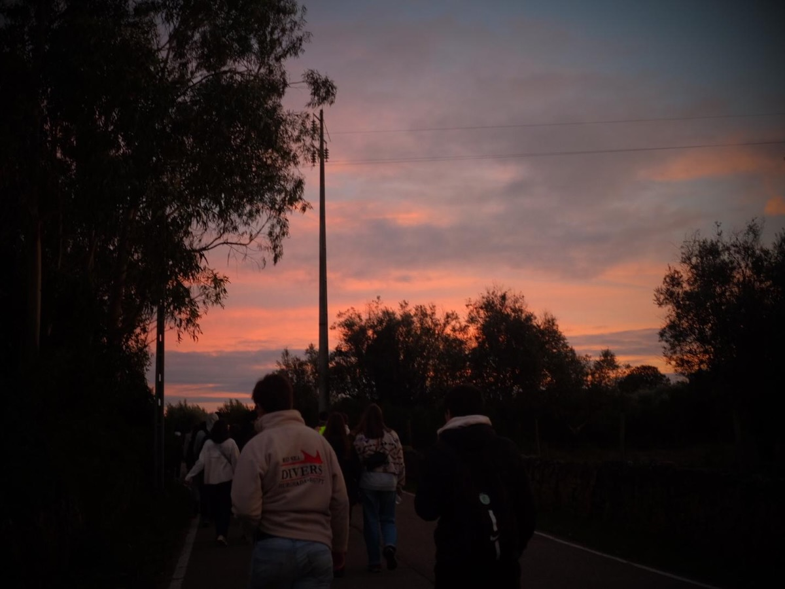
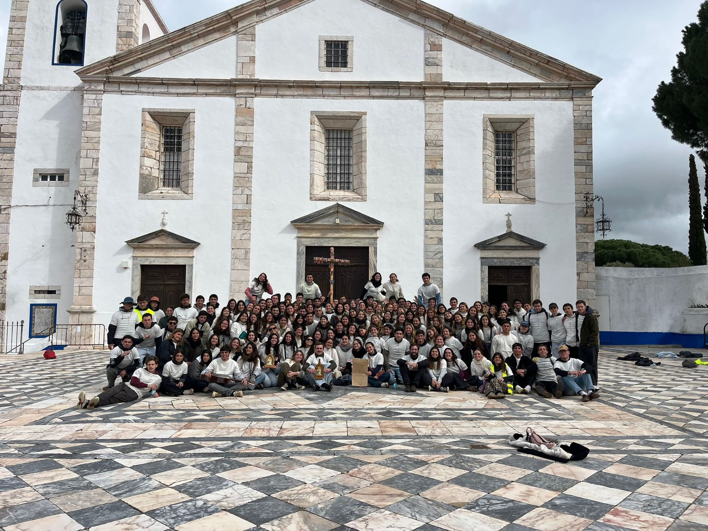
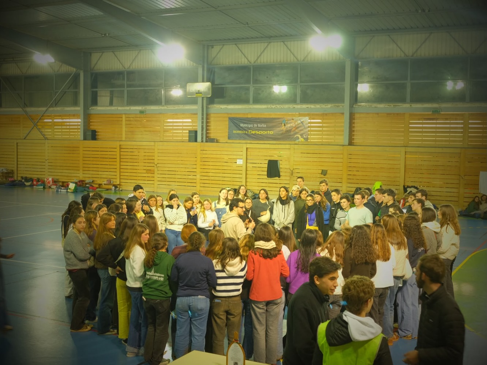
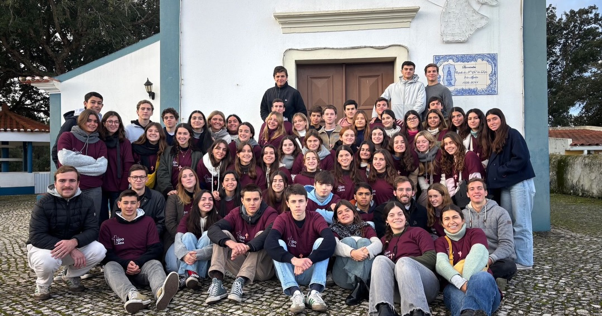
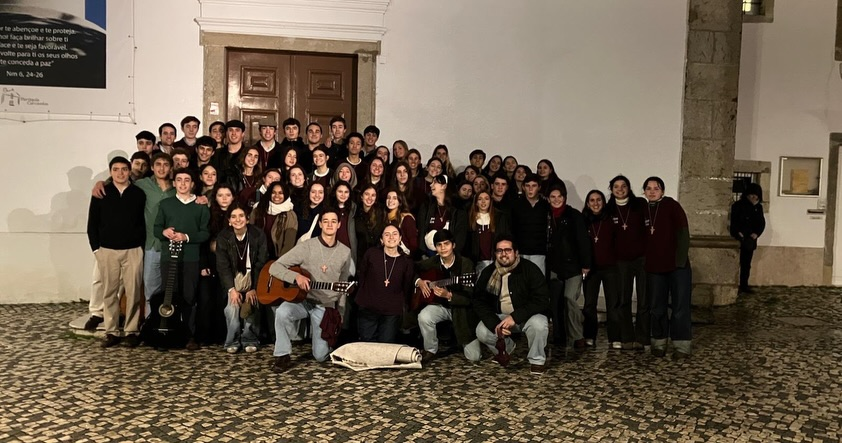
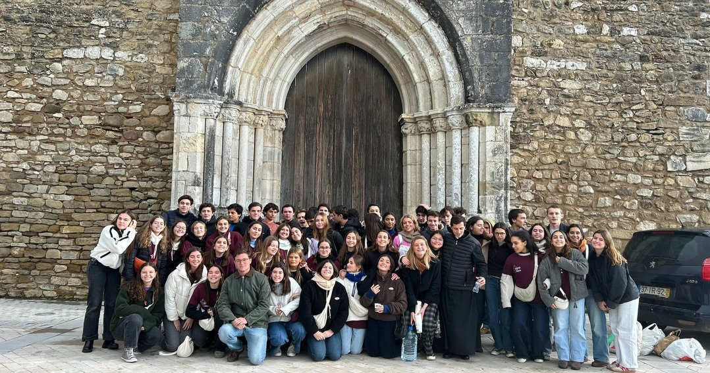
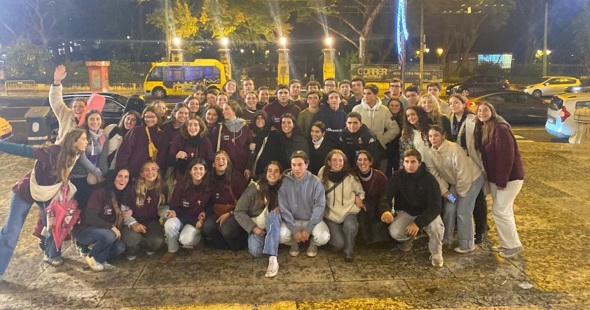
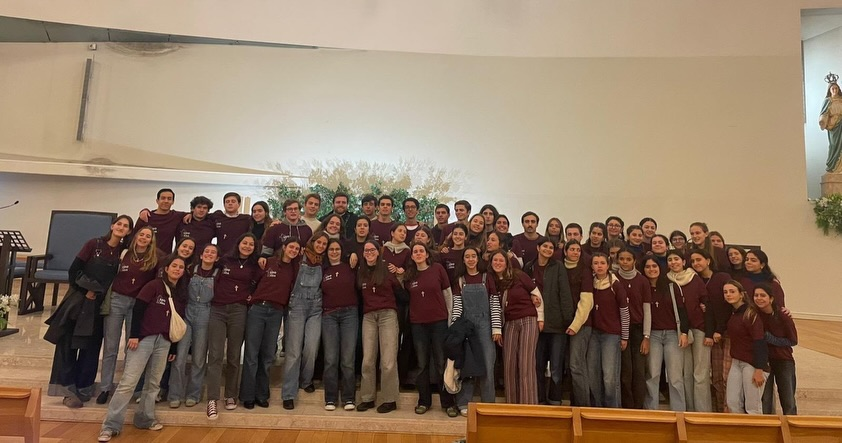
Faltam poucos dias para a Abertura das Inscrições
As inscrições para as nossas missões abrem dia 2 de Novembro!
Quem já foi, não esquece
Lê a experiência real de quem já viveu uma Missão Tudo ou Nada durante o secundário.
Aluna do 10º Ano
Escola Secundária do Pedro Nunes
“É dando que se recebe... no meio de uma semana de serviço e comunidade, senti-me mais próxima de Deus.”
Para mim, a Missão Tudo ou Nada foi uma experiência que marcou profundamente a minha fé. Apesar de já conhecer muitas pessoas da escola, esta semana deu-me a oportunidade de conhecer muitas mais, criar novas amizades e fortalecer ainda mais as que já tinha.
Foi uma semana em que servimos, mas em que recebemos muito mais. Mesmo com o cansaço, aprendemos a ver Deus em tudo e em todos, percebendo que Jesus se manifesta também no serviço e na forma como nos entregamos aos outros.
Foi, sem dúvida, uma grande oportunidade e uma verdadeira sorte poder viver esta experiência. Foi também muito bonito ver a Igreja em movimento, uma escola pública inteira a levar esperança, com uma adesão conjunta e uma juventude disposta a sair da sua rotina para servir. Estas missões tiveram um impacto real em tantas pessoas e fizeram-me perceber a força que existe quando vivemos juntos a nossa fé.
“É dando que se recebe”, e foi exatamente assim. No meio de uma semana de serviço, comunidade e partilha, senti-me mais próxima de Deus e percebi que a melhor maneira de vivermos a fé, é na esperança, juntos.
Aluno do 11º Ano
Escola Secundária do Pedro Nunes
“Inscrevi-me sem conhecer ninguém e saí de lá cheio de amizades que duram até hoje.”
Para muitas pessoas o seu primeiro encontro verdadeiro com Deus fora da rotina habitual do dia-a-dia é um campo em miúdo, mas para mim foi a Missão Tudo ou Nada.
Eu inscrevi-me sem conhecer praticamente ninguém, os que conhecia não me dava propriamente bem, mas saí de lá cheio de novas amizades que quase um ano depois continuam vivas e em contacto regular.
Para mim aquela semana ajudou muito a crescer a minha fé e mostrou de forma crua como Deus nos pede para amar os outros: a servir. Naquela semana com frio e chuva era muitas vezes aquelas conversas de 15 minutos no porta-a-porta com pessoas que já perderam tudo ou estarmos a fazer de “netinhos” para os idosos no lar, que no final nos aquecia e dava força e prazer para continuar.
E não tenho dúvidas algumas que aquela foi das semanas que mais me mudou como pessoa e como católico.
Chefe Geral de Missão
Escola Secundária Rainha Dona Amélia
“Foi a forma perfeita de melhorar o ambiente na escola e levar Deus a este campo das nossas vidas.”
Nunca tinha feito missões e de repente sou convidada para ser chefe geral de uma missão do Tudo ou Nada. Entre o caos da preparação e a correria daquela semana, percebi que tudo o que se passou foi uma graça enorme de Deus.
Foi uma semana que mudou a vida de fé de muitos de nós, e até começou o caminho de alguns para junto de Jesus.
Foi a forma perfeita de melhorar também o ambiente na escola, levar Deus a este campo das nossas vidas onde tantas vezes é mais esquecido, e acima de tudo criar tantas amizades em Cristo.